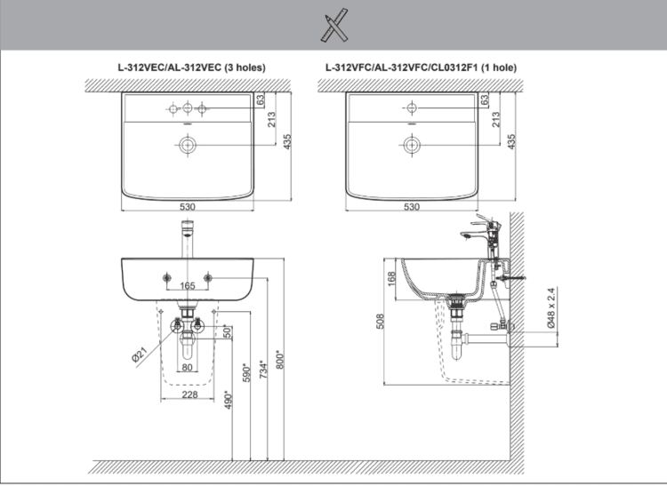

Chậu rửa treo tường AL-312V(EC/FC) là lựa chọn hoàn hảo dành cho phòng tắm vừa và nhỏ nhờ thiết kế treo tường giúp tối ưu không gian. Sản phẩm nổi bật với chất liệu sứ cao cấp, ứng dụng công nghệ AQUA CERAMIC độc quyền của INAX giúp bề mặt men luôn sáng bóng và chống bám bẩn hiệu quả lên đến 100 năm.Thiết kế chậu rửa treo tường AL-312V(EC/FC)Với kiểu dáng hiện đại, thanh lịch cùng kích thước 530 x 435 x 196 mm (Rộng x Sâu x Cao), chậu rửa treo tường AL-312V(EC/FC) không chỉ tối ưu hóa công năng mà còn mang đến vẻ đẹp sang trọng, tinh tế cho không gian. Sản phẩm có hai tùy chọn về mặt thiết kế, bao gồm:AL-312VEC: Chậu 3 lỗ, phù hợp với vòi 1 tay gạt.AL-312VFC: Chậu 1 lỗ.Tính năng nổi bật của chậu rửa treo tường AL-312V(EC/FC)Chất liệu sứ cao cấp, bền bỉ.Công nghệ AQUA CERAMIC độc quyền hạn chế bám bẩn, giúp bề mặt luôn sáng bóng và dễ dàng vệ sinh.Lòng chậu sâu tiện lợi cho nhiều mục đích sử dụng.Lỗ xả tràn an toàn, chống tràn hiệu quả.Để hoàn thiện không gian, bạn có thể kết hợp chậu rửa AL-312V(EC/FC) với vòi chậu nước lạnh LFV-612S. Sự kết hợp này tạo nên một tổng thể hài hòa, hiện đại cho phòng tắm/phòng vệ sinh với vẻ đẹp sang trọng và công năng vượt trội.Video giới thiệu bộ sưu tập INAX S200Bản vẽ lắp đặt chậu rửa treo tường AL-312V(EC/FC)Xem file hướng dẫn chi tiết tại đây.Thông số kỹ thuậtChất liệuSứKiểu dángTreo tườngKích thước530 x 435 x 196 (mm) (Rộng x Sâu x Cao)Tính năng- Chất liệu sứ cao cấp với công nghệ AQUA CERAMIC cho men sứ 100 năm sáng đẹp, hạn chế bám bẩn - Lỗ xả tràn tiện lợi - Lòng chậu sâu để sử dụng đa năngThương hiệuINAXThiết kế- Hiện đại, trang nhã, tối ưu công năng sử dụng, phù hợp với phòng tắm nhỏ và vừa - EC: Chậu 3 lỗ gắn vòi 1 tay gạt - FC: Chậu 1 lỗMàu sắcTrắngKhác- Gợi ý sản phẩm đi kèm: Vòi chậu nước lạnh LFV-612S - Hotline tư vấn: 18006633Giới thiệu về INAX - thương hiệu thiết bị vệ sinh chuẩn Nhật BảnINAX là thương hiệu thiết bị vệ sinh cao cấp hàng đầu Nhật Bản. Thương hiệu nổi tiếng với sự kết hợp hoàn hảo giữa công nghệ tiên tiến và thiết kế sang trọng, tinh tế. Với hơn 100 năm kinh nghiệm, INAX không ngừng nghiên cứu, sáng tạo công nghệ và thiết kế mới để mang đến những sản phẩm chất lượng cao, bền bỉ và tiện nghi, nâng tầm không gian sống của mọi khách hàng. Mỗi sản phẩm của INAX đều thể hiện triết lý về sự hài hòa và an toàn, phản ánh đúng tinh thần chuẩn mực của người Nhật.Để được tư vấn và tham khảo thêm về các thiết bị vệ sinh nói chung và các mẫu chậu rửa treo tường nói chung, bạn hãy liên hệ đến INAX qua thông tin sau:Website: INAXHotline: 18006633Email: inaxvietnam@lixil.comHệ thống phân phối INAXShowroom:Hà Nội: Tầng 1,2 số 46 Bích Câu, Phường Ô Chợ Dừa, Hà NộiĐà Nẵng: Tầng 1,2 số 189 Điện Biên Phủ, Phường Thanh Khê, TP. Đà NẵngHồ Chí Minh: 218bis Nam Kỳ Khởi Nghĩa, Phường Xuân Hòa, TP.HCM
Chậu rửa treo tường AL-312V(EC/FC)
Chậu rửa thương hiệu INAX.
Đã cập nhật danh sách yêu thích.
DANH MỤC: Chậu rửa
MÃ SẢN PHẨM: AL-312V(EC/FC)
DEPTH: 196mm
HEIGHT: 435mm
WIDTH: 530mm
Chậu rửa treo tường AL-312V(EC/FC) là lựa chọn hoàn hảo dành cho phòng tắm vừa và nhỏ nhờ thiết kế treo tường giúp tối ưu không gian. Sản phẩm nổi bật với chất liệu sứ cao cấp, ứng dụng công nghệ AQUA CERAMIC độc quyền của INAX giúp bề mặt men luôn sáng bóng và chống bám bẩn hiệu quả lên đến 100 năm.Thiết kế chậu rửa treo tường AL-312V(EC/FC)Với kiểu dáng hiện đại, thanh lịch cùng kích thước 530 x 435 x 196 mm (Rộng x Sâu x Cao), chậu rửa treo tường AL-312V(EC/FC) không chỉ tối ưu hóa công năng mà còn mang đến vẻ đẹp sang trọng, tinh tế cho không gian. Sản phẩm có hai tùy chọn về mặt thiết kế, bao gồm:AL-312VEC: Chậu 3 lỗ, phù hợp với vòi 1 tay gạt.AL-312VFC: Chậu 1 lỗ.Tính năng nổi bật của chậu rửa treo tường AL-312V(EC/FC)Chất liệu sứ cao cấp, bền bỉ.Công nghệ AQUA CERAMIC độc quyền hạn chế bám bẩn, giúp bề mặt luôn sáng bóng và dễ dàng vệ sinh.Lòng chậu sâu tiện lợi cho nhiều mục đích sử dụng.Lỗ xả tràn an toàn, chống tràn hiệu quả.Để hoàn thiện không gian, bạn có thể kết hợp chậu rửa AL-312V(EC/FC) với vòi chậu nước lạnh LFV-612S. Sự kết hợp này tạo nên một tổng thể hài hòa, hiện đại cho phòng tắm/phòng vệ sinh với vẻ đẹp sang trọng và công năng vượt trội.Video giới thiệu bộ sưu tập INAX S200Bản vẽ lắp đặt chậu rửa treo tường AL-312V(EC/FC)Xem file hướng dẫn chi tiết tại đây.Thông số kỹ thuậtChất liệuSứKiểu dángTreo tườngKích thước530 x 435 x 196 (mm) (Rộng x Sâu x Cao)Tính năng- Chất liệu sứ cao cấp với công nghệ AQUA CERAMIC cho men sứ 100 năm sáng đẹp, hạn chế bám bẩn - Lỗ xả tràn tiện lợi - Lòng chậu sâu để sử dụng đa năngThương hiệuINAXThiết kế- Hiện đại, trang nhã, tối ưu công năng sử dụng, phù hợp với phòng tắm nhỏ và vừa - EC: Chậu 3 lỗ gắn vòi 1 tay gạt - FC: Chậu 1 lỗMàu sắcTrắngKhác- Gợi ý sản phẩm đi kèm: Vòi chậu nước lạnh LFV-612S - Hotline tư vấn: 18006633Giới thiệu về INAX - thương hiệu thiết bị vệ sinh chuẩn Nhật BảnINAX là thương hiệu thiết bị vệ sinh cao cấp hàng đầu Nhật Bản. Thương hiệu nổi tiếng với sự kết hợp hoàn hảo giữa công nghệ tiên tiến và thiết kế sang trọng, tinh tế. Với hơn 100 năm kinh nghiệm, INAX không ngừng nghiên cứu, sáng tạo công nghệ và thiết kế mới để mang đến những sản phẩm chất lượng cao, bền bỉ và tiện nghi, nâng tầm không gian sống của mọi khách hàng. Mỗi sản phẩm của INAX đều thể hiện triết lý về sự hài hòa và an toàn, phản ánh đúng tinh thần chuẩn mực của người Nhật.Để được tư vấn và tham khảo thêm về các thiết bị vệ sinh nói chung và các mẫu chậu rửa treo tường nói chung, bạn hãy liên hệ đến INAX qua thông tin sau:Website: INAXHotline: 18006633Email: inaxvietnam@lixil.comHệ thống phân phối INAXShowroom:Hà Nội: Tầng 1,2 số 46 Bích Câu, Phường Ô Chợ Dừa, Hà NộiĐà Nẵng: Tầng 1,2 số 189 Điện Biên Phủ, Phường Thanh Khê, TP. Đà NẵngHồ Chí Minh: 218bis Nam Kỳ Khởi Nghĩa, Phường Xuân Hòa, TP.HCM
DANH MỤC: Chậu rửa
MÃ SẢN PHẨM: AL-312V(EC/FC)
DEPTH: 196mm
HEIGHT: 435mm
WIDTH: 530mm